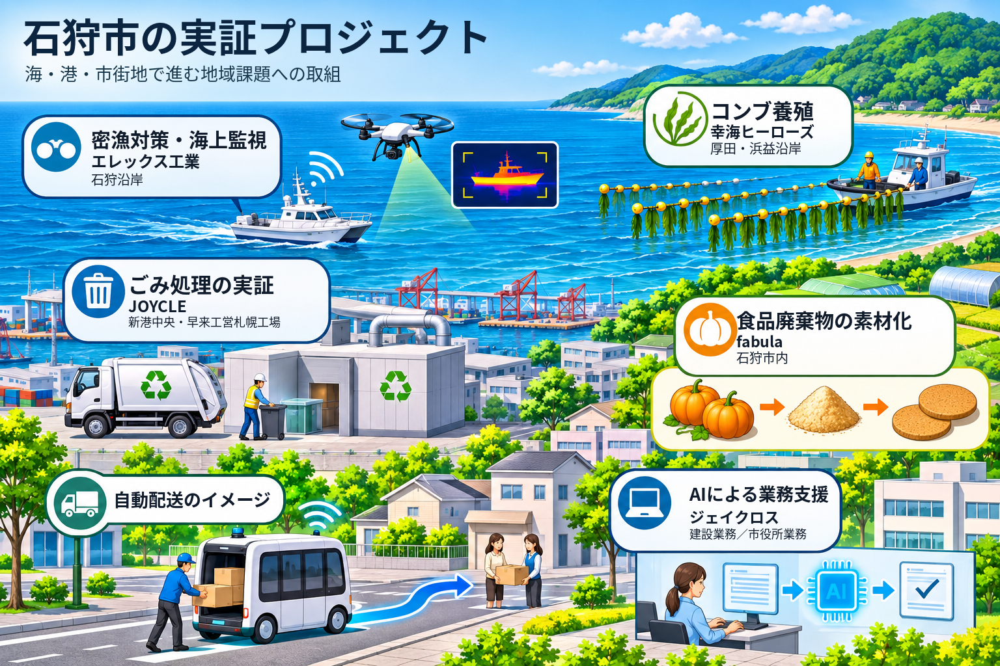

北海道・石狩市
第9章 石狩市は、地域課題とデータセンターをどう結び付けているのか
9.1 2024年度に始まった地域イノベーション連携事業
石狩市は2024年度、地域が抱える課題をスタートアップ企業の技術や事業モデルによって解決し、新しい産業の創出につなげる「地域イノベーション連携石狩モデル事業」を開始しました。この事業には、地域課題の解決に加え、石狩湾新港地域に集積するデータセンターのデータ需要を生み出すという目的があります。地域の企業や行政が新しい技術を利用し、その活動からデータの保存や処理の需要を生み出そうとする取り組みです。（毎日みらい創造ラボ「令和6年度 地域イノベーション連携石狩モデル事業委託業務 報告書【概要版】」、2025年）
2024年度は、一般財団法人地域総合整備財団（ふるさと財団）の地域イノベーション連携モデル事業に採択され、株式会社毎日みらい創造ラボが運営を担いました。事業の中心となったのは、地域の現場を調べ、課題を理解したうえで、企業が持つ技術を使った実証計画を作ることでした。
2024年9月26日から28日まで、全国からスタートアップ10社が石狩市を訪れ、2泊3日のリサーチ合宿に参加しました。市職員や外部専門家も協力し、農業や漁業をはじめとする地域事業者へのヒアリングが行われています。企業は自社の技術を紹介するだけではなく、地域で何が問題になっているのか、その解決に誰が協力できるのかを調べました。（石狩市「令和6年度地域イノベーション連携石狩モデル事業について」、2025年）
合宿に先立ち、石狩市と毎日みらい創造ラボは、農家、水産事業者、飲食店などへの聞き取りによって地域課題を整理していました。合宿では、参加企業の技術や関心に応じて訪問先を調整し、具体的な実証計画につながる情報を集めています。こうした方法を採用したのは、全国に共通する課題であっても、地域の産業構造や現場の条件によって、必要な解決策が異なるためです。（毎日みらい創造ラボ、2025年）
公表資料から確認できるのは、地域事業者を中心とした現地調査とヒアリングです。住民個人への聞き取りについては、実施人数や発言内容を特定できる記録が確認できず、住民全体の意向が調査されたものとして扱うことはできません。現地調査は、地域の課題を事業者とともに具体化し、実証へ結び付けるためのものだったと位置付けられます。
合宿の最終日には10社が事業提案を発表し、JOYCLE、エレックス工業、幸海ヒーローズの3社が実証企業として採択されました。各社が取り組んだのは、ごみの収集・運搬、密漁対策、コンブ養殖という異なる地域課題です。
| 採択企業 | 対象とした地域課題 | 2024年度の実証 |
|---|---|---|
| JOYCLE | ごみの長距離運搬、収集運転手の不足 | GPSによる収集経路の調査と分散型処理設備の導入効果の試算 |
| エレックス工業 | 密漁・不審船への対策 | マイクロ波計測技術による船舶からの電波検知 |
| 幸海ヒーローズ | 漁業の担い手不足、新しい水産業の創出 | 石狩沿岸でのコンブ養殖 |
JOYCLEが着目したのは、ごみ処理施設から離れた地域での収集・運搬の負担です。石狩市では、ごみを集めて処理施設まで運ぶために長い距離を移動する必要があり、運転手の高齢化や人手不足も課題となっています。同社は、ごみの排出場所に近いところで処理・資源化する小型装置「JOYCLE BOX」の導入を構想していました。
初年度には、市内事業者3社の協力を得て、ごみ収集車にGPSセンサーを取り付け、走行経路や収集状況を調査しました。その結果を基に、分散型の処理装置を導入した場合に運搬費用をどの程度削減できるかを試算しています。報告書では、12台を導入した場合に2〜3年程度で投資回収が可能との試算が示されていますが、実際に12台を導入した実績ではありません。（毎日みらい創造ラボ、2025年）
この実証では、ごみ収集の現状を把握し、分散型処理によって運搬負担を軽減できる可能性を示しました。装置そのものの処理性能や寒冷地での運用条件は、翌年度の実証課題として残されました。
エレックス工業は、石狩沿岸で問題となる密漁への対策に取り組みました。密漁は漁業者に経済的な損失をもたらすだけでなく、養殖などの新しい事業への投資を妨げる要因にもなります。そこで同社は、JAXAとの技術開発に関係するマイクロ波計測技術を利用し、夜間でも船舶の存在を検知できるかを検証しました。
2024年11月には、石狩湾漁業協同組合の協力を得て、密漁船に見立てた船舶から発信される電波を測定しました。その結果、模擬船舶からの電波を検出でき、夜間にも検知可能であることを確認しています。これは密漁船を実際に摘発した成果ではなく、監視技術としての利用可能性を確認したものです。（毎日みらい創造ラボ、2025年）
この事例には、データセンターの利用に関係する構想も見られます。エレックス工業の公式サイトに掲載された石狩市実証の報道紹介では、観測データを地域のデータセンターへ保存し、解析する計画が説明されています。地域で取得する情報をデータセンターの利用へつなげようとする構想ですが、実際の保存先や解析設備、利用実績まで確定したものではありません。（エレックス工業「PRODUCT」）
幸海ヒーローズは、石狩の海でコンブを養殖し、新しい水産業へ発展させる可能性を検証しました。漁業の担い手不足や海洋環境の変化が進むなか、養殖によって新たな収入源を作ることを目指しています。
2024年11月上旬に養殖を開始し、2025年2月上旬にはコンブが約2.2mまで成長しました。石狩の海域でもコンブ養殖が成立する可能性を示す成果でしたが、継続的な生産や販売まで確認されたわけではありません。事業化には、収穫後の乾燥・加工、販売先の確保、地域漁業者との協力体制を整える必要があります。（毎日みらい創造ラボ、2025年）
2024年度に採択された3社は、すべて2025年度にも継続採択されました。JOYCLEは収集経路の調査から実機によるごみ処理へ、エレックス工業は電波検知から夜間の監視方法の検証へ、幸海ヒーローズは養殖可能性の確認から養殖海域の拡大へと進んでいます。
初年度の事業によって、地域の課題を外部企業が調べ、地元事業者と協力して技術を試す関係が形成されました。データセンター需要の創出も当初から目的に含まれていましたが、地域で実証が行われたこと自体は、市内DCの利用実績を意味しません。新しい技術を試す段階から、地域で継続的に事業を行う段階へ進めるかが、翌年度以降の課題となりました。
9.2 2025年度は、どのような実証へ広がったのか
2025年度の地域イノベーション連携石狩モデル事業では、前年度からの3社に、新規のジェイクロスとfabulaが加わり、合計5社が採択されました。ごみ処理、密漁対策、コンブ養殖に加え、建設業務へのAI利用と食品廃棄物の資源化が実証対象となり、地域の産業活動を支える技術が広がっています。（石狩市「令和7年度地域イノベーション連携石狩モデル事業について」、2026年）
ジェイクロスが取り組んだのは、建設業での人材不足や技術継承、書類作成業務の負担です。施工計画書の作成や確認には、経験を持つ技術者の知識と多くの作業時間が必要になります。同社は、AIによってこうした業務の一部を支援し、実務に利用できるかを検証しました。
実証では、施工計画書の作成支援に要する時間が89時間から13時間へ短縮され、チェック支援でも180分から45分へ短縮されました。従来の作業とAIを利用した場合を比較すると、次のようになります。
| 検証した業務 | 従来 | AI利用後 |
|---|---|---|
| 施工計画書の作成支援 | 89時間 | 13時間 |
| 施工計画書のチェック支援 | 180分 | 45分 |
出典：毎日みらい創造ラボ「令和7年度地域イノベーション連携石狩モデル事業 委託業務報告書【概要版】」、2026年。
作業時間を大幅に短縮できたことは、建設業の人手不足に対応するうえで具体的な成果です。経験豊富な技術者が時間をかけて行っていた作業の一部をAIで支援できれば、限られた人員を現場管理などの業務へ振り向けられる可能性があります。
その反面、作成・確認した書類の品質には課題が残りました。石狩市の技術職員によるチェック支援の評価は20点満点中13点で、現場固有の条件や工事工程を十分に反映できない部分が指摘されています。作業時間を短縮できたことと、専門家による確認を省略して実務に利用できることは異なります。（毎日みらい創造ラボ、2026年）
地域への普及という点でも、別の問題が確認されました。市内の建設会社を対象に実証への協力を募集しましたが、応募はありませんでした。AIの技術的な有効性を示せても、地元企業が実際に導入し、継続的に利用する需要が成立するとは限りません。
ジェイクロスの実証では、AIによる計算処理が具体的な業務改善へ結び付きました。しかし、その計算処理が石狩市内のデータセンターで行われたかどうかは、公表された成果からは分かりません。AI利用による業務改善と、市内計算設備の利用は、別々に評価する必要があります。
もう一つの新規採択企業であるfabulaは、食品廃棄物を新しい素材や製品へ変える実証を行いました。石狩市内で廃棄予定となっていたカボチャ約100kgを利用し、破砕、乾燥、粉末化、成形などの工程を経て、コースターを試作しています。（fabula「令和7年度 地域イノベーション連携石狩モデル事業に採択、廃棄かぼちゃの素材化・プロダクト化に向けた実証実験が完了しました」、2026年）
地域で発生した食品廃棄物を製品の材料へ転換できたことは、資源の再利用という点で成果です。しかし、継続的に製造・販売するためには、原料を集め、加工し、商品として供給する体制が必要になります。石狩市も、破砕や乾燥、粉末化などの工程を地域内で行える仕組みの構築を今後の課題として挙げています。（石狩市、2026年）
fabulaの実証は、地域の廃棄物から新しい事業を生み出す可能性を示しています。公表資料には市内DCの利用を裏付ける情報がないため、地域イノベーションの成果として評価し、データセンター利用の成果とは分けて扱います。
2024年度から継続採択された3社も、初年度の調査結果を基に、より実際の運用に近い検証へ進みました。そのうちJOYCLEは、2024年度のGPS調査から、ごみ処理装置「JOYCLE BOX」の実機検証へ移りました。2026年1月、石狩市新港中央にある早来工営株式会社札幌工場で、石狩市学校給食センターから排出された生ごみや一般ごみを使い、寒冷地での処理性能と電力消費量などを測定しています。
投入した廃棄物は合計122.49kgで、2025年度の報告書では減容率99.8％が示されています。装置によってごみを大幅に減らせることが確認された反面、寒冷地では電力消費量が通常の約20倍に増加することや、暴風雪への対応と設置場所の確保が課題となりました。（毎日みらい創造ラボ、2026年）
装置が実際の廃棄物を処理できたことは、初年度の導入効果の試算から進んだ成果です。一方、処理性能を確認できても、地域で設備を使い続けられるとは限りません。電力消費や維持管理、設置条件を含め、継続的な事業として成立するかを判断する必要があります。
エレックス工業は、2024年度の電波検知に続き、2025年度にはドローンとサーモカメラを利用した夜間の人物検知を実証しました。高度40〜50mから模擬不審船上の人物の動きを把握できたことが報告されています。（毎日みらい創造ラボ、2026年）
これによって、船舶の存在を検知する段階から、その周辺での活動を観測する段階へ検証が進みました。しかし、人物の動きを撮影できることと、密漁行為を特定できることは同じではありません。撮影結果を確認した北海道警察や海上保安部からも、何を採取したかまで確認できなければ摘発は難しいとの意見が示されています。実際の警戒業務に導入するには、検知結果をどのように利用するかという運用体制も必要になります。（毎日みらい創造ラボ、2026年）
幸海ヒーローズは、初年度の養殖可能性の確認から、浜益と厚田の2地区での養殖へ実証を拡大しました。さらにアデコと連携したGX人材育成プログラムも実施し、4社から10数名が参加しています。（毎日みらい創造ラボ、2026年）
養殖海域を広げることはできましたが、商品化には課題が残りました。協業を希望する企業との接点は生まれたものの、乾燥コンブを確保できず、試作品の製作まで進められなかったことが報告されています。また、前年に育ったコンブの一部を刈り残す試みでも、翌年まで十分に維持できない結果となりました。
こうした結果から、コンブが成長することと、安定した生産・加工・販売の仕組みを整えることは別の段階だと分かります。事業化に向けては、養殖を続けるための人員や設備に加え、乾燥・加工の体制を確保する必要があります。
2026年2月12日には、毎日みらい創造ラボが主催する「第11回DEMO DAY」が東京都内で開催され、石狩市の採択5社が2025年度の実証成果を発表しました。会場には民間企業の新規事業担当者や投資家などが参加し、JOYCLEが来場者投票によるオーディエンス賞を受賞しています。（毎日みらい創造ラボ「令和7年度地域イノベーション連携石狩モデル事業 委託業務報告書【概要版】」、2026年）
成果発表会によって、石狩市で行った実証を外部の事業会社や投資家へ紹介する機会が生まれました。発表や受賞は事業への関心を示すものですが、その後の商用契約や投資が成立したことを意味しません。実証で示された成果が、地域での継続的な事業活動へ発展したかどうかは、その後の活動によって評価する必要があります。
2025年度には、AIによる業務時間の短縮、ごみ処理装置の実機検証、夜間監視、コンブ養殖の拡大、廃棄物の素材化など、具体的な成果が得られました。同時に、地元企業への導入、運用費用、加工体制、関係機関との連携など、実証から事業化へ進むために必要な条件も明らかになっています。
9.3 2026年度には、どのような地域課題が対象になったのか
2026年度の地域イノベーション連携石狩モデル事業では、新規3件と継続1件が採択されました。新規採択はスタイルアーツ、Upside、農縁プロジェクトで、2025年度に建設業向けのAI実証を行ったジェイクロスが継続採択されています。（石狩市「令和8年度地域イノベーション連携石狩モデル事業について」、2026年）
| 採択主体 | 区分 | 実証テーマ |
|---|---|---|
| スタイルアーツ | 新規 | AIを利用した製造業の知識継承 |
| Upside | 新規 | GPS・水温・漁獲量を利用するスマート水産 |
| 農縁プロジェクト | 新規 | 地域の農業資源を活用する市民農園 |
| ジェイクロス | 継続 | 石狩市役所の複数業務におけるAI利用 |
このうちスタイルアーツが取り組むのは、中小製造業における知識や作業手順の継承です。熟練した従業員が持つ技術を文書やマニュアルに整理するには大きな負担がかかり、新しい従業員の採用や業務の受託にも影響することがあります。2026年度は、このような製造業の業務に加え、漁業や行政でもデータやAIを使う実証が採択されており、地域の事業者が日常的に扱う情報を利用する活動が増えれば、データの保存や計算処理を継続して利用する可能性も生まれます。
同社は、作業を「話す・見せる」ことで知識として整理できるAIプラットフォームの実効性を検証します。作業の説明や映像などを利用して情報を整理できれば、技術継承や従業員教育の負担を減らせる可能性があります。（石狩市、2026年）
AIを使って知識を整理・検索するためには、データの保存や計算処理が必要になる場合があります。製造業者が継続利用するサービスになれば、日常業務から計算需要が生まれることも考えられます。しかし、採択段階の公表資料では、処理するデータ量や計算設備の所在地、市内製造業者への導入数は明らかになっていません。
Upsideは、漁業者の経験や勘に頼りがちな漁場の判断を、データによって支える取り組みです。GPS、水温、漁獲量などをアプリで可視化し、漁獲高の向上につなげる実証を計画しています。（石狩市、2026年）
漁業者が操業の過程で取得した情報を蓄積できれば、過去の漁獲状況と海の状態を比較し、漁場を判断する材料として利用できます。サービスが日常的に使われるようになれば、データの保存や分析が継続的な業務の一部になる可能性があります。
Upsideは石狩市での採択以前から漁業向けのデータサービスを展開していますが、他地域での利用実績を石狩市の成果として扱うことはできません。石狩市内でどれだけの漁業者が利用し、どのような効果が得られたかについては、当該実証の結果によって判断する必要があります。
農縁プロジェクトは、農家が持つ農地や生産技術などの資源を利用し、農園利用方式による市民農園を実証する取り組みです。農業の担い手不足に対応し、農産物の生産・出荷以外にも地域の農業資源を活用できる事業を目指しています。（石狩市、2026年）
採択後には、具体的な地域活動も公表されています。2026年9月22日、石狩市の寺内農園と連携した親子向けのニンジン収穫体験が企画され、北海道の体験予約サイトで参加者が募集されました。参加料金は大人・子ども共通で700円とされています。（北海道体験「畑からスポッ！にんじん収穫体験」、2026年）
この企画は、地域農家の資源を活用した有料サービスの募集が行われたことを示しています。実際の参加人数や継続開催の状況は、募集情報だけでは判断できません。また、公表された事業内容に市内DC利用との直接的な関係は示されていないため、地域課題の解決を目指す取り組みとして評価します。
ジェイクロスは、2025年度の施工計画書の作成・チェック支援から、2026年度には石狩市役所の複数業務でAIの利用可能性を検証する計画へ進みました。（石狩市、2026年）
行政は多くの文書や業務上の情報を扱っており、AIによる資料作成や確認作業の支援が実用化されれば、職員の日常業務の中で継続的な利用需要が生まれる可能性があります。その効果を評価するには、作業時間の短縮に加えて、文書の正確性や行政業務への適合性も確かめる必要があります。
2026年度の募集要項によると、実証期間は2026年9月から2027年1月までで、2027年2月中旬に成果報告会が予定されています。（石狩市「令和8年度地域イノベーション連携石狩モデル事業 募集要項」、2026年）
2026年11月24日時点では、年度末の成果報告前の段階です。農縁プロジェクトのように採択後の具体的な活動が公表された案件もありますが、4件すべての実証成果や商用化、行政への正式採用が確定したわけではありません。
2026年度は、地域企業や行政が扱う情報をAIやアプリで活用する実証が増えています。これらが継続的な事業へ発展すれば、データの保存や計算処理の需要も生まれる可能性があります。その需要が実際に石狩市内のデータセンターへ向かうかどうかは、制度上の条件と実利用の両方から評価する必要があります。
9.4 市が「DCのデータ需要創出」を掲げる意味
石狩市は2026年度の地域イノベーション連携石狩モデル事業について、地域課題の解決と新しい産業の創出に加え、市内データセンターのデータ需要を生み出すことを明記しています。この目的は2024年度の事業開始時から掲げられており、地域で新しい事業を育てることを、データセンターの利用へ結び付けようとするものです。（石狩市「令和8年度地域イノベーション連携石狩モデル事業について」、2026年／毎日みらい創造ラボ「令和6年度 地域イノベーション連携石狩モデル事業委託業務 報告書【概要版】」、2025年）
地域にデータセンターが立地しても、その計算能力を市内の企業や行政が利用するとは限りません。データセンターの利用者が地域外の企業であれば、施設が立地する地域と、計算能力を活用する産業の所在地は異なることになります。
石狩市が地域イノベーション事業を通じて目指しているのは、地域自身がデータを利用する活動を生み出し、その保存や処理を市内の設備へ結び付けることです。その政策目的は、募集要項にも具体的な条件として反映されています。
2025年度の募集要項では、実証実験によって創出されるデータについて、クラウドサービスを必要とする場合に市内データセンターを活用することが応募要件として規定されていました。（石狩市「令和7年度地域イノベーション連携石狩モデル事業 募集要項」、2025年）
2026年度には条件の表現が変更され、データ処理と保管の両方を対象とした規定になりました。募集要項の「2．対象」（3）では、次のように定めています。
実証実験により創出されるデータ処理及び保管について、市内のデータセンターが提供する各種サービスの活用を検討すること。
（石狩市「令和8年度地域イノベーション連携石狩モデル事業 募集要項」、2026年）
2025年度は、クラウドサービスを必要とする場合に市内DCを活用することを求めていました。2026年度は、データの「処理及び保管」を明示したうえで、市内DCのサービスを活用するかどうかを検討することが条件となっています。
| 年度 | 市内DCに関する応募条件 |
|---|---|
| 2025年度 | クラウドサービスが必要な場合、市内DCを活用すること |
| 2026年度 | データ処理・保管について、市内DCの各種サービスの活用を検討すること |
この変更には二つの特徴があります。第一に、2026年度はデータの保管だけでなく、計算処理も含むサービスを明示しています。第二に、応募者に求める行為が「活用すること」から「活用を検討すること」へ変わっています。
2026年度の要件は、市内DCを必ず利用することではなく、その利用可能性を検討することを求めるものです。したがって、制度上の利用義務は2025年度より緩和されたと読めます。
なぜこの変更が行われたのかについて、市が理由を説明した資料は今回の調査では確認できませんでした。2025年度の条件が実証事業者の利用環境に合わなかったのか、2026年度に対象企業を広げるための変更だったのかといった事情は、根拠なく推定できません。
石狩市の政策を評価する際には、さらに「データ需要」と「計算需要」を分ける必要があります。データを取得すること、保存すること、計算設備で解析すること、実証後も継続して利用することは、それぞれ異なる活動だからです。
例えば、漁業者がGPSや水温の情報を取得しても、その情報が市内DCに保存されるとは限りません。石狩市内のストレージに保存した場合は地域内の保管需要が生まれますが、計算処理を市外の設備で行えば、市内のCPUやGPUを利用したことにはなりません。
AIを利用する場合も同様です。AIへ入力した文書や映像の保存場所と、AIモデルが実際に計算処理を行う場所は、同じとは限りません。
データの取得から計算能力の利用までの関係を整理すると、次のようになります。
地域の課題
↓
企業・行政による実証
↓
データの取得・生成
↓
【利用先①：市内DCで保存】
地域内のデータ保管需要が発生
↓
【利用先②：市内DCで解析・AI処理】
地域内の計算能力の利用需要が発生
↓
【利用先③：市外の設備で保存・処理】
市内DCの利用には直結しない
※①②③は別々の利用形態であり、順番に進む工程ではありません。
実証後も地域で事業が継続
↓
市内DCの保存・計算サービスを継続利用
↓
地域内に継続的なデータ保管・計算需要が発生
この図は、データの取得と設備利用の関係を整理したものです。市内DCでの保存と計算は、それぞれ独立して利用することも可能であり、すべての事業が同じ順序で進むわけではありません。
2024〜2026年度の採択事業には、こうしたデータ利用の可能性を持つものが複数あります。JOYCLEはごみ収集経路や装置の運転情報を取得し、エレックス工業は船舶の検知データを取得しました。ジェイクロスはAIによる文書処理を実証し、2026年度には製造業の知識継承や漁業データの可視化も採択されています。
しかし、これらの事業でデータが発生したことだけでは、市内DCの利用が実現したとは判断できません。実際にどの施設でデータを保存し、どの設備で処理したのかを示す情報が必要です。
エレックス工業については、観測データを地域のデータセンターへ保存・解析する構想が公表されています。これは石狩市の政策目的に沿った具体的な計画ですが、利用する施設名や契約内容、実際の処理量、継続期間を示す実績は確認できません。（エレックス工業「PRODUCT」）
ジェイクロスについても、AIによる業務時間の短縮は確認できていますが、計算処理を行ったデータセンターの所在地は、2025年度の概要報告書に明記されていません。
今回確認した事業案内、募集要項、委託業務報告書、企業発表には、採択事業全体の市内DC利用件数、保存容量、計算処理量、継続契約を比較できる実績資料はありませんでした。市内DCを利用する政策上の仕組みが存在することと、実際にどれだけの需要が生まれたかは、別々に評価する必要があります。
データの管理についても、確認すべき問題があります。漁業者の操業情報、製造業者の作業手順、行政が扱う業務資料などは、取得する主体も利用目的も異なります。市内DCに保存する場合でも、データを取得した企業、利用する地域事業者、クラウドサービス提供者、データセンター運営事業者の間で、管理や利用の役割を定める必要があります。
2025・2026年度の募集要項にある市内DC利用に関する条件だけでは、実証成果のデータを誰が利用できるのか、実証終了後にどのように保管するのか、契約上の責任を誰が負うのかまでは確定できません。採択事業ごとの契約条件も、公表資料からは把握できませんでした。
石狩市は、地域課題から新しい事業を生み出し、その活動を市内DCのデータ需要へ結び付ける政策を進めています。2025年度には市内DCの活用を求める条件を設け、2026年度にはデータ処理・保管サービスの利用可能性を検討する条件へ変更しました。
制度としての方向性は明確です。しかし、地域で発生したデータが市内に保存され、市内の計算設備で処理され、実証終了後も継続して利用されているかについては、実際の利用記録に基づく評価が必要です。

9.5 実証は、地域での事業活動にどこまでつながったのか
2024年度から2026年度までの地域イノベーション連携石狩モデル事業では、2024年度に3社、2025年度に5社、2026年度に4件が採択されました。継続採択を含めると延べ12件で、重複を除いた採択主体は8件です。（石狩市「令和6年度地域イノベーション連携石狩モデル事業について」、2025年／「令和7年度地域イノベーション連携石狩モデル事業について」、2026年／「令和8年度地域イノベーション連携石狩モデル事業について」、2026年）
採択件数は、地域課題の解決に取り組む企業・団体が広がったことを示しています。しかし、石狩市が目指しているのは、技術を試すことだけではありません。実証を通じて地域に新しい事業が生まれ、その活動が継続していくことも目的です。
その成果を評価するため、継続実証、商用化、地域企業との契約、市内拠点の設置、利用者数、市内DCの利用、行政サービスへの採用という7項目から、実証後の活動を整理します。
| 評価項目 | 2026年11月24日時点で確認できる状況 |
|---|---|
| 継続実証 | 2024年度の採択3社が2025年度も継続。ジェイクロスも2026年度に継続 |
| 商用化 | 有料サービスの募集、製品試作、公共施設への導入提案などを確認 |
| 地域企業との契約 | 実証協力は確認できるが、継続的な商用契約の公表は限定的 |
| 石狩への拠点設置 | 採択主体全体の市内拠点設置状況は確認できない |
| 利用者数 | 個別プログラムの参加人数等はあるが、継続的なサービス利用者数は十分に公表されていない |
| 市内DCの利用 | 利用条件と具体的な構想は確認。採択事業全体の実利用件数・規模は確認できない |
| 行政サービスへの採用 | ジェイクロスなどが実証段階。正式採用は確認できない |
継続実証については、2024年度の採択3社がすべて2025年度にも採択され、2025年度のジェイクロスも翌年度へ進んでいます。初年度の調査や技術検証によって明らかになった課題を、次の実証へ引き継ぐ仕組みが機能していることが分かります。
一方、実証の継続と商用化は異なります。実証期間中に技術的な効果が確認されても、その後に企業が顧客を確保し、収入を得ながら事業を続けられるとは限りません。
実証後の活動として、JOYCLEは2026年4月、石狩市での実証成果を発表し、市内や近隣自治体の公共施設への導入提案を進める方針を示しました。これは技術検証から実際の導入を目指す段階へ進んだことを示しますが、正式な導入契約が成立したことや、市のごみ処理業務として継続運用されていることを示すものではありません。（JOYCLE「石狩市での生ごみ資源化実証に成功」、2026年）
幸海ヒーローズは、2026年11月1日に石狩の浜益などを舞台とする有料体験ツアーを企画し、参加者を募集しました。コンブの種付け体験などが含まれ、参加費は5,000円とされています。地域の養殖事業から体験サービスへ活動が広がった事例ですが、実際の参加人数や継続的な収益は募集情報だけでは把握できません。（幸海ヒーローズ「GREEN & BLUE 石狩ツアー」参加者募集、2026年）
fabulaも、2026年4月に廃棄カボチャを利用した素材化・製品化の実証完了を公表しています。製品の試作まで進んだことは確認できますが、その後の継続販売や市内加工拠点の設置までは確認できていません。（fabula、2026年）
これらの企業では、実証後に導入提案や有料サービスの募集、製品化へ進む活動が見られます。しかし、商用契約が成立し、継続的な売上や利用者を確保できているかについては、公表されている情報が限られています。
地域企業との契約についても、実証への協力と継続的な事業取引を区別する必要があります。JOYCLEの調査や実証には市内事業者が協力し、幸海ヒーローズは地域の漁業者と連携して養殖を進めました。農縁プロジェクトも地元農園との共同企画を行っています。
これらは、外部企業や団体が地域で活動するための関係を形成した成果です。しかし、その後に継続的な商用契約が結ばれ、地域企業の収入につながったかどうかは別の問題です。今回確認した公表資料では、採択主体全体の契約状況を比較できる情報はありませんでした。
市内拠点の設置についても同様です。実証のために石狩市を訪れたり、北海道内に事務所を持ったりしているだけでは、石狩市内に継続的な事業拠点を設置したことにはなりません。採択8主体の市内拠点設置状況を比較できる資料も確認できませんでした。
利用者数については、実証に協力した人数と、商用サービスを継続して利用する顧客数を分ける必要があります。幸海ヒーローズの2025年度GX人材育成プログラムには4社から10数名が参加したことが報告されていますが、これはプログラムへの参加実績であり、コンブ商品や継続的なサービスの顧客数ではありません。（毎日みらい創造ラボ「令和7年度地域イノベーション連携石狩モデル事業 委託業務報告書【概要版】」、2026年）
ジェイクロスのAIサービスやUpsideの漁業データサービスについても、石狩市内で実証終了後にどれだけの企業や利用者を獲得したかを示す比較可能な数字は確認できませんでした。地域への定着を評価するには、実証期間中の参加者だけでなく、その後の継続利用者を把握する必要があります。
行政サービスへの採用では、2026年度のジェイクロスの実証が注目されます。2025年度の建設業向けAIから、市役所の複数業務でのAI利用可能性を検証する計画へ進んだためです。
行政業務でAIが継続的に利用されるようになれば、文書処理などを通じて計算需要が生まれる可能性があります。しかし、2026年11月24日時点で公表されているのは実証計画であり、正式な行政システムとして導入されたことを示すものではありません。JOYCLEの公共施設への導入についても、企業による提案と、市による正式な導入決定を分けて考える必要があります。
市内DCの利用については、2025年度に活用条件が設けられ、2026年度にもデータ処理・保管サービスの活用を検討する条件があります。エレックス工業には、地域のデータセンターを利用する具体的な構想も見られます。
しかし、今回確認した事業案内、委託業務報告書、企業発表には、採択企業が実際にどの市内DCを利用し、どれだけのデータを保存・処理し、実証終了後も継続しているかを比較できる情報はありませんでした。
したがって、延べ12件の実証事業を、市内DCの利用実績12件と扱うことはできません。 AIやデータを利用した事業が採択されても、保存や計算処理が市内の設備で行われたことにはならないためです。
石狩市の地域イノベーション連携事業は、地域課題を調べ、外部企業の技術を現場で試し、その成果を事業化へつなげる仕組みとして複数年度にわたり継続しています。初年度の3社は翌年度も実証を続け、2025年度にはAIによる業務時間の短縮、ごみ処理装置の実機検証、コンブ養殖の拡大などで具体的な成果が得られました。
実証終了後にも、公共施設への導入提案や有料サービスの募集、製品化へ取り組む企業が確認できます。地域課題の解決に向けた技術が、実際の事業活動へ発展しようとしていることは、石狩市の政策の成果として評価できます。
一方、地域企業との継続契約、市内拠点の設置、利用者数、行政への正式採用については、採択事業全体を評価できるだけの情報が公表されていません。市内DCの利用についても、政策目的と応募条件は確認できるものの、実利用の規模や継続性は明らかになっていません。
石狩市は、データセンターを誘致するだけでなく、地域でデータを利用する事業を育て、その需要を市内の設備へ結び付けようとしています。2024年度に始まった取り組みは、実証を継続する企業を生み、2025年度と2026年度には市内DCの活用に関する条件も設けられました。
地域課題の解決と新しい事業活動の創出については、具体的な成果が積み重なっています。今後、その活動が地域企業の継続的な事業となり、市内DCのデータ保管や計算処理の需要へどこまで結び付くかが、政策の到達点を判断するうえで重要になります。
参考文献
令和6年度地域イノベーション連携石狩モデル事業について
石狩市、2025年6月2日更新
https://www.city.ishikari.hokkaido.jp/sangyo/yuchi/1006416/1006447.html
令和6年度 地域イノベーション連携石狩モデル事業委託業務 報告書【概要版】
株式会社毎日みらい創造ラボ、2025年2月
https://www.city.ishikari.hokkaido.jp/_res/projects/default_project/_page_/001/006/447/r6d.pdf
令和7年度地域イノベーション連携石狩モデル事業について
石狩市、2026年6月24日更新
https://www.city.ishikari.hokkaido.jp/sangyo/yuchi/1006416/1006415.html
令和7年度地域イノベーション連携石狩モデル事業 委託業務報告書【概要版】
株式会社毎日みらい創造ラボ、2026年2月
https://www.city.ishikari.hokkaido.jp/_res/projects/default_project/_page_/001/006/415/r7houkoku.pdf
令和7年度地域イノベーション連携石狩モデル事業 募集要項
北海道石狩市、2025年度
https://www.city.ishikari.hokkaido.jp/_res/projects/default_project/_page_/001/006/415/youkou.pdf
令和8年度地域イノベーション連携石狩モデル事業について
石狩市、2026年11月12日更新
https://www.city.ishikari.hokkaido.jp/sangyo/yuchi/1006416/1007250.html
令和8年度地域イノベーション連携石狩モデル事業 募集要項
北海道石狩市、2026年度
https://drive.google.com/file/d/1TMlP4QYBv0QdnDwqCGOoPO-Heg0dECvA/view
「令和8年度地域イノベーション連携石狩モデル事業」参加者募集
株式会社毎日みらい創造ラボ、2026年5月12日
https://dev.mirailab.tech/news/pbkjyeh47wf
PRODUCT | Hyperspectral Microwave Radiometer DSμRAD
エレックス工業株式会社、公表日記載なし
https://elecs.co.jp/en/product/index.html
JOYCLE、石狩市での生ごみ資源化実証に成功。極寒環境下でも「JOYCLE BOX」の安定稼働を証明
株式会社JOYCLE、2026年4月9日
https://joycle.net/news-20260409/
令和7年度 地域イノベーション連携石狩モデル事業に採択、廃棄かぼちゃの素材化・プロダクト化に向けた実証実験が完了しました
fabula株式会社、2026年4月24日
https://note.com/fabula_inc/n/n4b2ad681af0a
【参加者募集】昆布の種付け体験も！石狩の自然を味わう日帰り体験ツアー「GREEN & BLUE 石狩ツアー」11/1開催
幸海ヒーローズ合同会社、2026年
【石狩・親子で農業体験】畑からスポッ！にんじん収穫体験
北海道体験、2026年